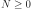
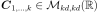
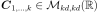
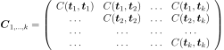

AggregatedProcess¶
(Source code, png, hires.png, pdf)
{kind=link}
{kind=link}
-
class
AggregatedProcess(*args)¶ Aggregation of several processes in one process.
- Available constructor:
- AggregatedProcess(collProc)
Parameters: collProc : sequence of
ProcessCollection of processes which all have the same spatial dimension.
Notes
If we note for the collection of processes, where for all
 .
Then the resulting aggregated process where . The mesh of the first process has been assigned to the process
.
Then the resulting aggregated process where . The mesh of the first process has been assigned to the process  .
.Examples
Create an aggregated process:
>>> import openturns as ot >>> myMesher = ot.IntervalMesher(ot.Indices([5,10])) >>> lowerbound = [0.0, 0.0] >>> upperBound = [2.0, 4.0] >>> myInterval = ot.Interval(lowerbound, upperBound) >>> myMesh = myMesher.build(myInterval) >>> myProcess1 = ot.WhiteNoise(ot.Normal(), myMesh) >>> myProcess2 = ot.WhiteNoise(ot.Triangular(), myMesh) >>> myAggregatedProcess = ot.AggregatedProcess([myProcess1, myProcess2])
Draw one realization:
>>> myGraph = myAggregatedProcess.getRealization().drawMarginal(0)
Methods
getClassName()Accessor to the object’s name. getContinuousRealization()Get a continuous realization. getCovarianceModel()Accessor to the covariance model. getDescription()Get the description of the process. getDimension()getFuture(*args)Prediction of the  future iterations of the process.
future iterations of the process.getId()Accessor to the object’s id. getInputDimension()Get the dimension of the domain  .
.getMarginal(*args)Accessor the marginal processes. getMesh()Get the mesh. getName()Accessor to the object’s name. getOutputDimension()Get the dimension of the domain .getProcessCollection()Get the collection of processes. getRealization()Get one realization of the aggregated process. getSample(size)Get  realizations of the process.
realizations of the process.getShadowedId()Accessor to the object’s shadowed id. getSpatialDimension()getTimeGrid()Get the time grid of observation of the process. getTrend()Accessor to the trend. getVisibility()Accessor to the object’s visibility state. hasName()Test if the object is named. hasVisibleName()Test if the object has a distinguishable name. isComposite()Test whether the process is composite or not. isNormal()Test whether the process is normal or not. isStationary()Test whether the process is stationary or not. setDescription(description)Set the description of the process. setMesh(mesh)Set the mesh. setName(name)Accessor to the object’s name. setProcessCollection(coll)Set the collection of processes. setShadowedId(id)Accessor to the object’s shadowed id. setTimeGrid(timeGrid)Set the time grid of observation of the process. setVisibility(visible)Accessor to the object’s visibility state. -
__init__(*args)¶ x.__init__(…) initializes x; see help(type(x)) for signature
-
getClassName()¶ Accessor to the object’s name.
Returns: class_name : str
The object class name (object.__class__.__name__).
-
getContinuousRealization()¶ Get a continuous realization.
Returns: realization :
FunctionEach process of the collection is continuously realized on the common domain .
-
getCovarianceModel()¶ Accessor to the covariance model.
Returns: cov_model :
CovarianceModelCovariance model, if any.
-
getDescription()¶ Get the description of the process.
Returns: description :
DescriptionDescription of the process.
-
getFuture(*args)¶ Prediction of the
future iterations of the process.Parameters: stepNumber : int, 
Number of future steps.
size : int,
 , optional
, optionalNumber of futures needed. Default is 1.
Returns: prediction :
ProcessSampleorTimeSeries future iterations of the process.
If  , prediction is a
, prediction is a TimeSeries. Otherwise, it is aProcessSample.
-
getId()¶ Accessor to the object’s id.
Returns: id : int
Internal unique identifier.
-
getInputDimension()¶ Get the dimension of the domain
.Returns: n : int
Dimension of the domain
: .
-
getMarginal(*args)¶ Accessor the marginal processes.
- Available usages:
getMarginal(index)
getMarginal(indices)
Parameters: index : int
Index of the selected marginal process.
indices :
IndicesList of indices of the selected marginal processes.
Notes
The selected marginal processes are extracted if the list of indices does not mingle the processes of the initial collection: take care to extract all the marginal processes process by process. For example, if , and then you can extract Indices([1,0,2,4,6]) but not Indices([1,2,0,4,6]).
-
getName()¶ Accessor to the object’s name.
Returns: name : str
The name of the object.
-
getOutputDimension()¶ Get the dimension of the domain
.Returns: d : int
Dimension of the domain
.
-
getProcessCollection()¶ Get the collection of processes.
Returns: collProc :
ProcessCollectionCollection of processes which all have the same spatial dimension.
-
getRealization()¶ Get one realization of the aggregated process.
Returns: realization :
FieldEach process of the collection is realized on the common mesh defined on .
-
getSample(size)¶ Get
realizations of the process.Parameters: n : int,

Number of realizations of the process needed.
Returns: processSample :
ProcessSample realizations of the random process. A process sample is a
collection of fields which share the same mesh  .
.
-
getShadowedId()¶ Accessor to the object’s shadowed id.
Returns: id : int
Internal unique identifier.
-
getTimeGrid()¶ Get the time grid of observation of the process.
Returns: timeGrid :
RegularGridTime grid of a process when the mesh associated to the process can be interpreted as a
RegularGrid. We check if the vertices of the mesh are scalar and are regularly spaced in but we don’t check if the connectivity of the mesh is conform
to the one of a regular grid (without any hole and composed of ordered
instants).
but we don’t check if the connectivity of the mesh is conform
to the one of a regular grid (without any hole and composed of ordered
instants).
-
getTrend()¶ Accessor to the trend.
Returns: trend :
TrendTransformTrend, if any.
-
getVisibility()¶ Accessor to the object’s visibility state.
Returns: visible : bool
Visibility flag.
-
hasName()¶ Test if the object is named.
Returns: hasName : bool
True if the name is not empty.
-
hasVisibleName()¶ Test if the object has a distinguishable name.
Returns: hasVisibleName : bool
True if the name is not empty and not the default one.
-
isComposite()¶ Test whether the process is composite or not.
Returns: isComposite : bool
True if the process is composite (built upon a function and a process).
-
isNormal()¶ Test whether the process is normal or not.
Returns: isNormal : bool
True if the process is normal.
Notes
A stochastic process is normal if all its finite dimensional joint distributions are normal, which means that for all
 and
and
 , with
, with  , there is
, there is
 and
 such that:
and
 such that:
where
 ,
,
 and
and
 and
and
 is the symmetric matrix:
is the symmetric matrix:
A Gaussian process is entirely defined by its mean function
 and its
covariance function
and its
covariance function  (or correlation function
(or correlation function  ).
).
-
isStationary()¶ Test whether the process is stationary or not.
Returns: isStationary : bool
True if the process is stationary.
Notes
A process
 is stationary if its distribution is invariant by
translation:
is stationary if its distribution is invariant by
translation:  ,
,
 ,
,
 , we have:
, we have:
-
setDescription(description)¶ Set the description of the process.
Parameters: description : sequence of str
Description of the process.
-
setName(name)¶ Accessor to the object’s name.
Parameters: name : str
The name of the object.
-
setProcessCollection(coll)¶ Set the collection of processes.
Parameters: collProc : sequence of
ProcessCollection of processes which all have the same spatial dimension.
-
setShadowedId(id)¶ Accessor to the object’s shadowed id.
Parameters: id : int
Internal unique identifier.
-
setTimeGrid(timeGrid)¶ Set the time grid of observation of the process.
Returns: timeGrid :
RegularGridTime grid of observation of the process when the mesh associated to the process can be interpreted as a
RegularGrid. We check if the vertices of the mesh are scalar and are regularly spaced in but we don’t check if the connectivity of the mesh is conform
to the one of a regular grid (without any hole and composed of ordered
instants).
-
setVisibility(visible)¶ Accessor to the object’s visibility state.
Parameters: visible : bool
Visibility flag.